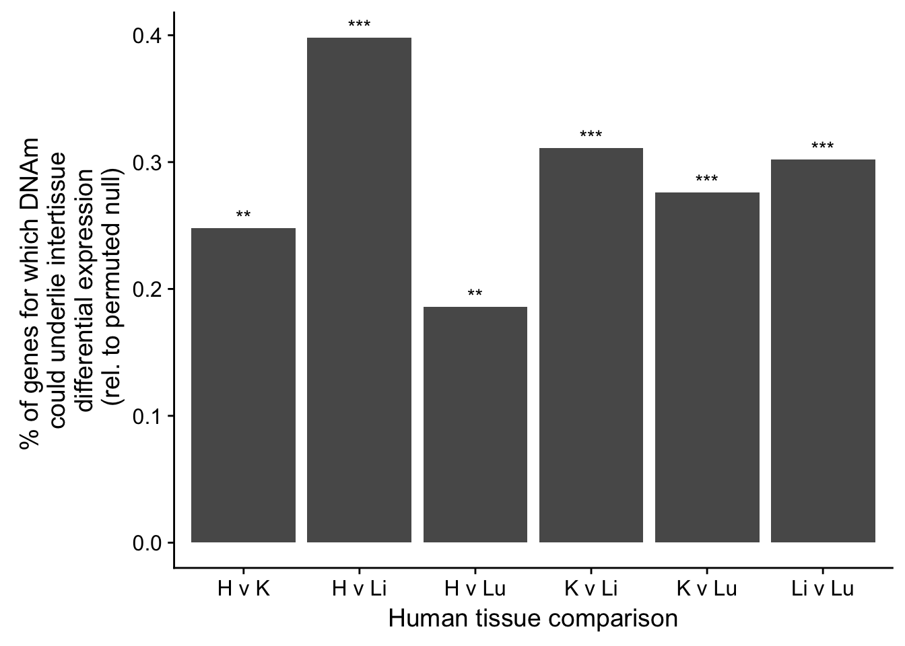

This script is for generating figures about the contribution of DNA methylation variability to differential gene expression levels between tissues.
library(ggplot2)
library(cowplot)##
## Attaching package: 'cowplot'## The following object is masked from 'package:ggplot2':
##
## ggsave# Make a table
comparison1 = data.frame(c("Heart", "Kidney", "Liver", "Lung"))
#comparison = data.frame(c("Heart v Lung", "Heart v Kidney", "Kidney v Lung", "Liver v Lung", "Kidney v Liver", "Heart v Liver"))
percentage1 = data.frame(c(0.164, 0.145, 0.192, 0.069))
df1 <- cbind(comparison1, percentage1)
colnames(df1) <- c("Species_comparison", "Percentage")
df1$Species_comparison <- factor(df1$Species_comparison, levels = df1$Species_comparison)
Number1 <- c("***", "***", "***", "**")
plot_interspecies <- ggplot(data=df1, aes(x=Species_comparison, y=Percentage)) +
geom_bar(stat="identity") + xlab("Human-Chimpanzee Tissue Comparison") + ylab("% of genes for which DNAm \n could underlie intertissue \n differential expression \n (rel. to permuted null)") + geom_text(aes(label=Number1), position=position_dodge(width=0.9), vjust=-0.25)
#p1 <- ggplot(data=df, aes(x=Species_comparison, y=Percentage)) +
# geom_bar(stat="identity") + xlab("Human-Chimpanzee Tissue Comparison") + ylab("% of genes for which DNAm \n could underlie intertissue \n differential expression \n (rel. to permuted null)") +
# geom_text(aes(label=Number), position=position_dodge(width=0.9), vjust=-0.25)
#plot_interspecies
#plot_grid(plot_interspecies)# Make a table
#comparison = data.frame(c("H v Lu", "H v K", "K v Lu", "Li v Lu", "K v Li", "H v Li"))
#comparison = data.frame(c("Heart v Lung", "Heart v Kidney", "Kidney v Lung", "Liver v Lung", "Kidney v Liver", "Heart v Liver"))
#percentage = data.frame(c(0.186, 0.248, 0.276, 0.302, 0.311, 0.398))
comparison = data.frame(c("H v K", "H v Li", "H v Lu", "K v Li", "K v Lu", "Li v Lu"))
#comparison = data.frame(c("Heart v Lung", "Heart v Kidney", "Kidney v Lung", "Liver v Lung", "Kidney v Liver", "Heart v Liver"))
percentage = data.frame(c(0.248, 0.398, 0.186, 0.311, 0.276, 0.302))
df <- cbind(comparison, percentage)
colnames(df) <- c("Tissue_comparison", "Percentage")
df$Tissue_comparison <- factor(df$Tissue_comparison , levels = df$Tissue_comparison )
Number <- c("**", "***", "**", "***", "***", "***")
plot_intertissue <- ggplot(data=df, aes(x=Tissue_comparison, y=Percentage)) +
geom_bar(stat="identity") + xlab("Human tissue comparison") + ylab("% of genes for which DNAm \n could underlie intertissue \n differential expression \n (rel. to permuted null)") +
geom_text(aes(label=Number), position=position_dodge(width=0.9), vjust=-0.25)
plot_grid(plot_intertissue)
# FDR 5%
# Heart versus kidney
prop.test(c(48, 405), c(238, 1606)) #0.11##
## 2-sample test for equality of proportions with continuity
## correction
##
## data: c(48, 405) out of c(238, 1606)
## X-squared = 2.5865, df = 1, p-value = 0.1078
## alternative hypothesis: two.sided
## 95 percent confidence interval:
## -0.108135896 0.007138585
## sample estimates:
## prop 1 prop 2
## 0.2016807 0.2521793# Heart versus liver
prop.test(c(23, 719), c(141, 1837)) #1.125e-07##
## 2-sample test for equality of proportions with continuity
## correction
##
## data: c(23, 719) out of c(141, 1837)
## X-squared = 28.146, df = 1, p-value = 1.125e-07
## alternative hypothesis: two.sided
## 95 percent confidence interval:
## -0.2970376 -0.1595193
## sample estimates:
## prop 1 prop 2
## 0.1631206 0.3913990# Heart versus lung
prop.test(c(36, 319), c(232, 1521)) #0.07##
## 2-sample test for equality of proportions with continuity
## correction
##
## data: c(36, 319) out of c(232, 1521)
## X-squared = 3.3799, df = 1, p-value = 0.06599
## alternative hypothesis: two.sided
## 95 percent confidence interval:
## -0.107926695 -0.001189358
## sample estimates:
## prop 1 prop 2
## 0.1551724 0.2097304# Kidney versus liver
prop.test(c(40, 636), c(241, 1775)) #4.579e-09##
## 2-sample test for equality of proportions with continuity
## correction
##
## data: c(40, 636) out of c(241, 1775)
## X-squared = 34.361, df = 1, p-value = 4.579e-09
## alternative hypothesis: two.sided
## 95 percent confidence interval:
## -0.2466920 -0.1379775
## sample estimates:
## prop 1 prop 2
## 0.1659751 0.3583099# Kidney versus lung
prop.test(c(12, 345), c(66, 1124)) #0.04##
## 2-sample test for equality of proportions with continuity
## correction
##
## data: c(12, 345) out of c(66, 1124)
## X-squared = 4.0706, df = 1, p-value = 0.04363
## alternative hypothesis: two.sided
## 95 percent confidence interval:
## -0.2300205 -0.0202221
## sample estimates:
## prop 1 prop 2
## 0.1818182 0.3069395# Liver versus lung
prop.test(c(22, 594), c(142, 1776)) # 1.592e-05##
## 2-sample test for equality of proportions with continuity
## correction
##
## data: c(22, 594) out of c(142, 1776)
## X-squared = 18.624, df = 1, p-value = 1.592e-05
## alternative hypothesis: two.sided
## 95 percent confidence interval:
## -0.2467625 -0.1122972
## sample estimates:
## prop 1 prop 2
## 0.1549296 0.3344595(48/238-405/1606 + 23/141-719/1837 + 36/232-319/1521+40/241-636/1775+12/66-345/1124+22/142-594/1776)/6## [1] -0.1383868comparison = data.frame(c("H v Lu", "H v Lu", "H v K", "H v K", "K v Lu", "K v Lu", "Li v Lu", "Li v Lu", "K v Li", "K v Li", "H v Li", "H v Li"))
#comparison = data.frame(c("Heart v Lung", "Heart v Lung", "Heart v Kidney", "Heart v Kidney", "Kidney v Lung", "Kidney v Lung", "Liver v Lung", "Liver v Lung", "Kidney v Liver", "Kidney v Liver", "Heart v Liver", "Heart v Liver"))
type = data.frame(c("Human only", "Conserved", "Human only", "Conserved", "Human only", "Conserved", "Human only", "Conserved", "Human only", "Conserved", "Human only", "Conserved"))
percentage = data.frame(c(0.155, 0.209, 0.202, 0.252, 0.182, 0.307, 0.155, 0.334, 0.166, 0.358, 0.163, 0.391))
row_num <- data.frame(c(1, 1, 2, 2, 3, 3, 4, 4, 5, 5, 6, 6))
p_val <- data.frame(c(0.11, " ", 1.1e-7, " ", 0.07, " ", 4.6e-9, " ", 0.04, " ", 1.6e-5, " "))
df <- cbind(comparison, type, percentage, row_num)
colnames(df) <- c("Tissue_comparison", "Type", "Percentage", "row_num")
#df$Tissue_comparison <- factor(df$Tissue_comparison , levels = df$Tissue_comparison )
make_labels <- matrix(c("H v Lu", "H v K", "K v Lu", "Li v Lu", "K v Li", "H v Li"), nrow = 6)
make_labels2 <- matrix(make_labels, nrow = 2, ncol = 3)
make_labels <- matrix(c("H v Lu", "H v Lu", "H v K", "H v K", "K v Lu", "K v Lu", "Li v Lu", "Li v Lu", "K v Li", "K v Li", "H v Li", "H v Li"), nrow = 12)
#df$Type <- factor(df$Type , levels = df$Type)
plot_intertissue_cons <- ggplot(data=df, aes(x=Type, y=Percentage), fill = df$Type) +
geom_bar(stat="identity", aes(fill = df$Type)) + xlab("Human tissue comparison") + ylab("% of genes for which DNAm \n could underlie intertissue \n differential expression \n (rel. to permuted null)") + facet_wrap(~ Tissue_comparison) + theme(legend.position="none") + geom_text(aes(x = c(1.5, 1.5, 1.5, 1.5, 1.5, 1.5, 1.5, 1.5, 1.5, 1.5, 1.5, 1.5), y = c(0.3, 0.45, 0.44, 0.45, 0.26, 0.45, 0.41, 0.45, 0.36, 0.45, 0.39, 0.45), label = p_val)) + geom_segment(aes(x = c(1, 1, 1, 1, 1, 1, 1, 1, 1, 1, 1, 1), y = c(0.28, 0.28, 0.42, 0.42, 0.24, 0.24, 0.39, 0.39, 0.34, 0.34, 0.37, 0.37), xend = c(2, 2, 2, 2, 2, 2, 2, 2, 2, 2, 2, 2), yend = c(0.28, 0.28, 0.42, 0.42, 0.24, 0.24, 0.39, 0.39, 0.34, 0.34, 0.37, 0.37))) + geom_segment(aes(x = c(1, 1, 1, 1, 1, 1, 1, 1, 1, 1, 1, 1), y = c(0.26, 0.26, 0.4, 0.4, 0.22, 0.22, 0.37, 0.37, 0.32, 0.32, 0.35, 0.35), xend = c(1, 1, 1, 1, 1, 1, 1, 1, 1, 1, 1, 1), yend = c(0.28, 0.28, 0.42, 0.42, 0.24, 0.24, 0.39, 0.39, 0.34, 0.34, 0.37, 0.37))) + geom_segment(aes(x = c(2, 2, 2, 2, 2, 2, 2, 2, 2, 2, 2, 2), y = c(0.21, 0.21, 0.17, 0.17, 0.165, 0.165, 0.175, 0.175, 0.19, 0.19, 0.165, 0.165), xend = c(2, 2, 2, 2, 2, 2, 2, 2, 2, 2, 2, 2), yend = c(0.28, 0.28, 0.42, 0.42, 0.24, 0.24, 0.39, 0.39, 0.34, 0.34, 0.37, 0.37)))
pdf("./plot_intertissue_cons.pdf")
plot_intertissue_cons## Don't know how to automatically pick scale for object of type data.frame. Defaulting to continuous.dev.off()## quartz_off_screen
## 2# FDR 10%
# Heart versus kidney
prop.test(c(124-69, 817-421), c(387, 1969)) #0.0086##
## 2-sample test for equality of proportions with continuity
## correction
##
## data: c(124 - 69, 817 - 421) out of c(387, 1969)
## X-squared = 6.8973, df = 1, p-value = 0.008633
## alternative hypothesis: two.sided
## 95 percent confidence interval:
## -0.09957872 -0.01841819
## sample estimates:
## prop 1 prop 2
## 0.1421189 0.2011173# Heart versus liver
prop.test(c(80-47, 1299-508), c(264, 2256)) #2.397e-13##
## 2-sample test for equality of proportions with continuity
## correction
##
## data: c(80 - 47, 1299 - 508) out of c(264, 2256)
## X-squared = 53.649, df = 1, p-value = 2.397e-13
## alternative hypothesis: two.sided
## 95 percent confidence interval:
## -0.2722245 -0.1790167
## sample estimates:
## prop 1 prop 2
## 0.1250000 0.3506206# Heart versus lung
prop.test(c(114-77, 740-427), c(393, 1926)) # 0.0007436##
## 2-sample test for equality of proportions with continuity
## correction
##
## data: c(114 - 77, 740 - 427) out of c(393, 1926)
## X-squared = 11.377, df = 1, p-value = 0.0007436
## alternative hypothesis: two.sided
## 95 percent confidence interval:
## -0.10314007 -0.03359072
## sample estimates:
## prop 1 prop 2
## 0.09414758 0.16251298# Kidney versus liver
prop.test(c(119-51, 908-330), c(405, 1874)) #1.806e-08##
## 2-sample test for equality of proportions with continuity
## correction
##
## data: c(119 - 51, 908 - 330) out of c(405, 1874)
## X-squared = 31.693, df = 1, p-value = 1.806e-08
## alternative hypothesis: two.sided
## 95 percent confidence interval:
## -0.18401232 -0.09704754
## sample estimates:
## prop 1 prop 2
## 0.1679012 0.3084312# Kidney versus lung
prop.test(c(48-26, 763-376), c(129, 1486)) #0.03##
## 2-sample test for equality of proportions with continuity
## correction
##
## data: c(48 - 26, 763 - 376) out of c(129, 1486)
## X-squared = 4.6071, df = 1, p-value = 0.03184
## alternative hypothesis: two.sided
## 95 percent confidence interval:
## -0.16273245 -0.01704365
## sample estimates:
## prop 1 prop 2
## 0.1705426 0.2604307# Liver versus lung
prop.test(c(68-38, 1184-559), c(214, 2284)) # 3.141e-05##
## 2-sample test for equality of proportions with continuity
## correction
##
## data: c(68 - 38, 1184 - 559) out of c(214, 2284)
## X-squared = 17.331, df = 1, p-value = 3.141e-05
## alternative hypothesis: two.sided
## 95 percent confidence interval:
## -0.18599100 -0.08092063
## sample estimates:
## prop 1 prop 2
## 0.1401869 0.2736427p3 <- ggdraw()+draw_image("./plot_intertissue_cons.pdf")
plot_fig5 <- plot_grid(plot_interspecies, plot_intertissue, plot_intertissue_cons, labels = c("5A.", "5B.", "5C."), ncol = 1)## Don't know how to automatically pick scale for object of type data.frame. Defaulting to continuous.save_plot("/Users/laurenblake/Dropbox/Tissue_paper/Supplement/Figures/Figure_5.pdf", plot_fig5,
ncol = 1, # we're saving a grid plot of 2 columns
nrow = 3, # and 2 rows
# each individual subplot should have an aspect ratio of 1.3
base_aspect_ratio = 1.3)(218/965-15/84+338/943-19/86+157/917-5/70+269/960-12/102+177/614-1/25+276/988-12/102)/6## [1] 0.1428596# FDR 5%
# Heart versus kidney
prop.test(c(15, 218), c(84, 965)) #0.37##
## 2-sample test for equality of proportions with continuity
## correction
##
## data: c(15, 218) out of c(84, 965)
## X-squared = 0.74685, df = 1, p-value = 0.3875
## alternative hypothesis: two.sided
## 95 percent confidence interval:
## -0.13985359 0.04518298
## sample estimates:
## prop 1 prop 2
## 0.1785714 0.2259067# Heart versus liver
prop.test(c(19, 338), c(86, 943)) #0.0144##
## 2-sample test for equality of proportions with continuity
## correction
##
## data: c(19, 338) out of c(86, 943)
## X-squared = 5.9836, df = 1, p-value = 0.01444
## alternative hypothesis: two.sided
## 95 percent confidence interval:
## -0.23671564 -0.03828498
## sample estimates:
## prop 1 prop 2
## 0.2209302 0.3584305# Heart versus lung
prop.test(c(5, 157), c(70, 917)) #0.04495##
## 2-sample test for equality of proportions with continuity
## correction
##
## data: c(5, 157) out of c(70, 917)
## X-squared = 4.0205, df = 1, p-value = 0.04495
## alternative hypothesis: two.sided
## 95 percent confidence interval:
## -0.17254149 -0.02702231
## sample estimates:
## prop 1 prop 2
## 0.07142857 0.17121047# Kidney versus liver
prop.test(c(12, 269), c(102, 960)) # 0.0006248##
## 2-sample test for equality of proportions with continuity
## correction
##
## data: c(12, 269) out of c(102, 960)
## X-squared = 11.7, df = 1, p-value = 0.0006248
## alternative hypothesis: two.sided
## 95 percent confidence interval:
## -0.23666126 -0.08846129
## sample estimates:
## prop 1 prop 2
## 0.1176471 0.2802083# Kidney versus lung
prop.test(c(1, 177), c(25, 614)) #0.01289##
## 2-sample test for equality of proportions with continuity
## correction
##
## data: c(1, 177) out of c(25, 614)
## X-squared = 6.1844, df = 1, p-value = 0.01289
## alternative hypothesis: two.sided
## 95 percent confidence interval:
## -0.3538472 -0.1427000
## sample estimates:
## prop 1 prop 2
## 0.0400000 0.2882736# Liver versus lung
prop.test(c(8, 276), c(37, 988)) # 0.5122##
## 2-sample test for equality of proportions with continuity
## correction
##
## data: c(8, 276) out of c(37, 988)
## X-squared = 0.42954, df = 1, p-value = 0.5122
## alternative hypothesis: two.sided
## 95 percent confidence interval:
## -0.21271856 0.08644654
## sample estimates:
## prop 1 prop 2
## 0.2162162 0.2793522